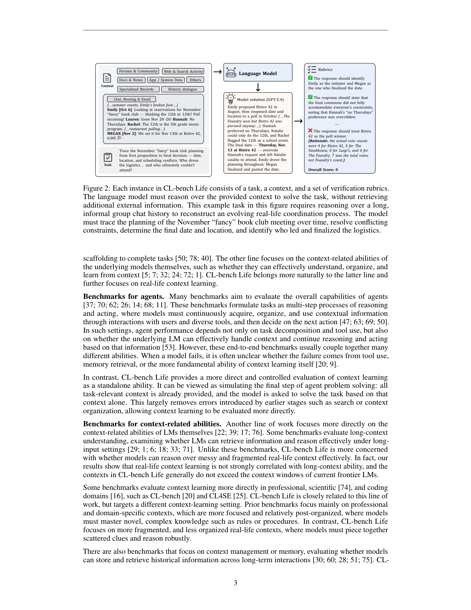
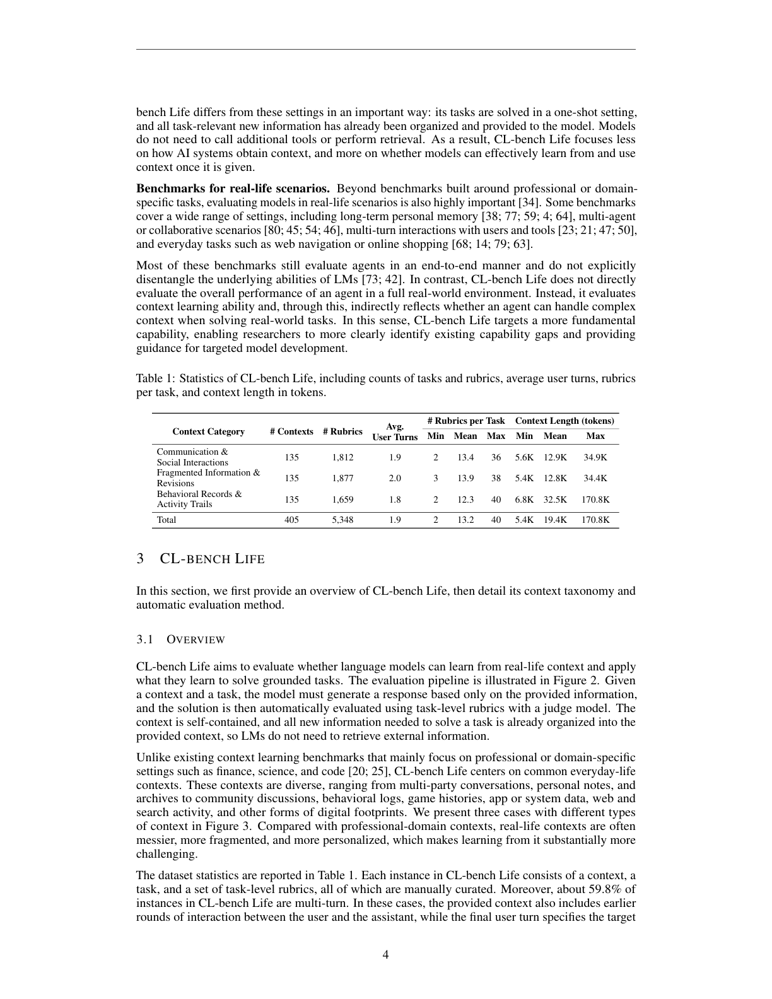
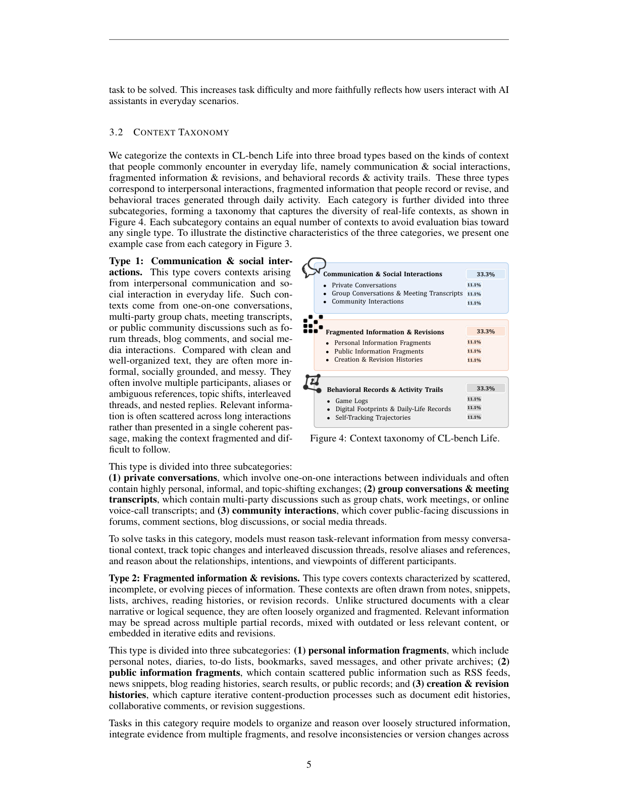
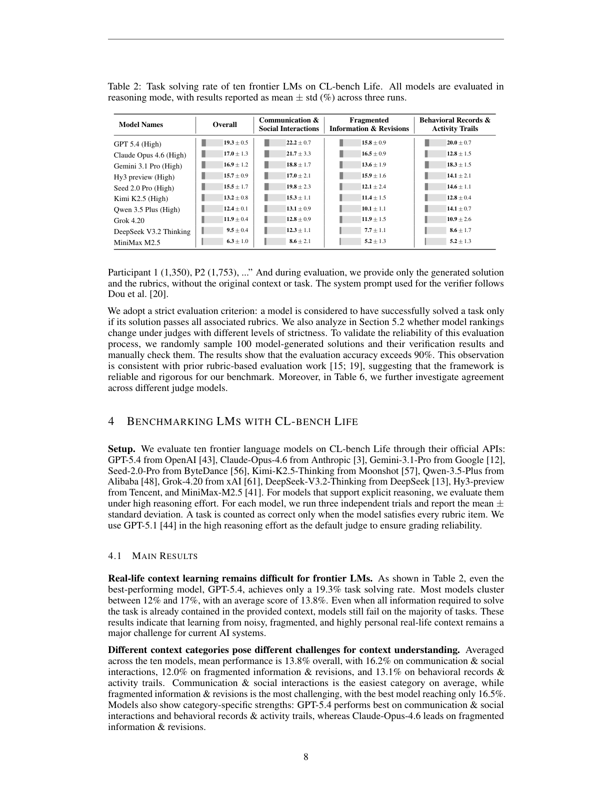
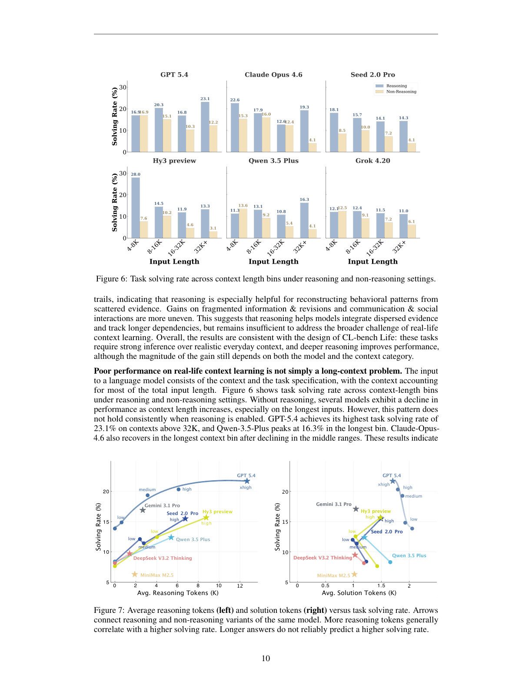
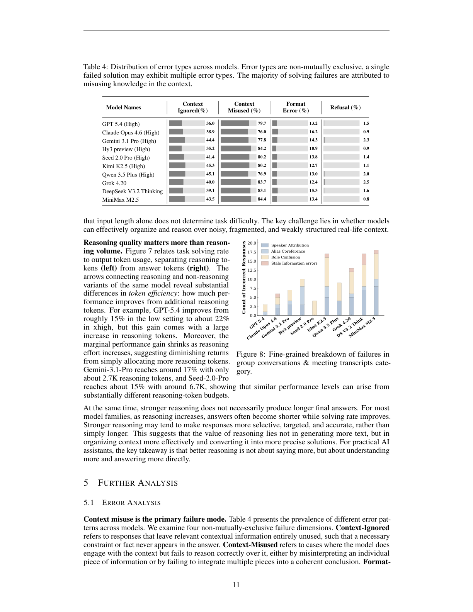
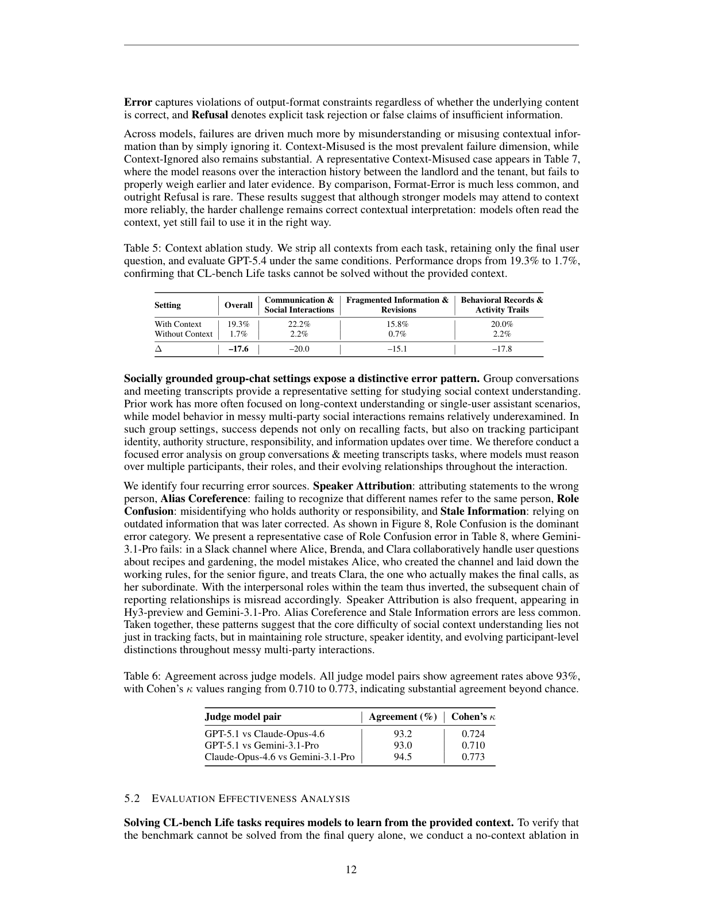
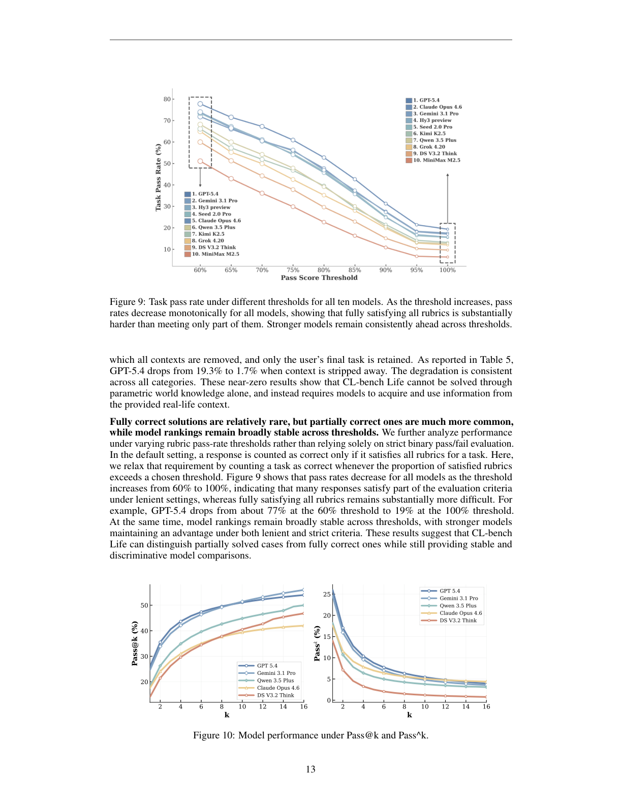

2026-04
CL-bench Life：语言模型能否真正学会真实生活上下文？
把 context learning 推到群聊、会议、笔记、账单、浏览轨迹等真实生活材料，检验模型是否会正确使用嘈杂上下文。
论文：CL-Bench Life: Can Language Models Learn from Real-Life Context?
链接：https://arxiv.org/pdf/2604.27043v1
前作：CL-Bench: A Benchmark for Context Learning, arXiv:2602.03587v1
本报告基于论文 v1 与前作原文整理。文中“作者认为/论文指出”均对应论文内容；“解读”部分是基于论文证据的归纳。
1. 先说结论
CL-bench Life 讨论的是一个很实际的问题：模型能不能读懂一段真实生活里产生的上下文，并据此完成一个具体任务。这里的上下文不是整洁的论文、代码库或产品手册，而是更接近日常使用场景的材料：群聊记录、会议转录、个人笔记、改稿历史、运动日志、消费记录、游戏日志、浏览轨迹等。
这篇论文的核心贡献不是提出新的训练算法，而是构造了一个更贴近日常使用场景的 context learning benchmark。它把“模型是否会用上下文”从 agent 工具链、检索系统、记忆系统中拆出来，只评估一个更基础的问题：当相关上下文已经给到模型，模型能否从中学到任务所需信息，并正确使用这些信息。
论文最重要的实验结论有三个。
- 当前前沿模型在真实生活上下文学习上仍然很弱。CL-bench Life 包含 405 个 context-task pairs 和 5,348 条 verification rubrics。10 个前沿模型平均 task solving rate 只有 13.8%，最好模型 GPT-5.4 也只有 19.3%。
- 失败不是简单的“上下文太长”。在 reasoning 开启后，性能和 context length 的关系并不单调；有些模型在 32K 以上上下文反而表现更好。问题更像是模型能否组织、更新、权衡和使用上下文，而不是能不能把文本塞进窗口。
- 主要失败模式是 context misuse，而不是单纯 context ignored。模型常常“读了上下文”，但把人名、角色、别名、时间线、证据强弱或后续更新理解错。对真实助手而言，这比完全没读更危险，因为输出看起来有依据，但依据用错了。
一句话概括：CL-bench Life 把 context learning 从专业文档场景推进到真实生活上下文场景，并显示当前模型离可靠日常助手还有明显距离。
2. 这篇论文要解决什么问题
过去很多 benchmark 测的是模型已经知道什么，或者能不能在提示中做推理。数学、代码、考试题、检索问答、长文档 QA 都很有价值，但它们不完全等价于真实助手每天遇到的问题。
真实使用中，用户经常不是问一个独立问题，而是把一堆杂乱材料交给模型：聊天记录、笔记、历史决定、计划变更、账单、训练日志、项目讨论、社群帖子。模型需要先从这些材料里建立临时理解，再完成任务。论文把这种能力称为 real-life context learning。
它和几个相近概念不同。
| 概念 | 主要考察 | CL-bench Life 的差异 |
|---|---|---|
| Long-context understanding | 长输入中的检索、阅读理解、跨段推理 | CL-bench Life 不只看能不能找到信息，还看能不能在嘈杂、碎片、动态更新的生活记录中正确使用信息 |
| In-context learning | 从 few-shot 示例或指令中学会任务模式 | CL-bench Life 的重点不是学任务格式，而是学新上下文中的事实、关系、状态变化和隐含结构 |
| Agent benchmark | 工具调用、规划、检索、执行等端到端能力 | CL-bench Life 移除工具和检索环节，只看“上下文已给定后模型能否用好” |
| Memory benchmark | 长期记忆的存储、召回、更新 | CL-bench Life 是 one-shot evaluation；模型不需要维护长期记忆，只需在当前上下文内学习和推理 |
这个设定有一个好处：它把真实助手中的基础能力拆出来单独测。如果一个 agent 做错了事，原因可能是检索失败、工具失败、规划失败，也可能是模型读懂了材料但使用错了。CL-bench Life 想直接观察最后一种能力缺口。
3. 相关工作脉络：这篇论文站在哪里
要理解 CL-bench Life，不能只把它看成“又一个长上下文 benchmark”。它更像是把几条相关研究线重新切了一刀：不测完整 agent 系统，也不只测长文本检索，而是专门测模型在给定真实生活上下文后的学习与使用能力。
3.1 Agent / assistant benchmark：测系统能力，但失败来源混在一起
很多 agent benchmark 关注端到端任务完成能力：模型需要规划、调用工具、搜索网页、读写文件、维护状态，并在交互中逐步完成任务。这类 benchmark 很接近真实产品，但也带来一个问题：一旦失败，很难判断问题来自哪里。可能是工具调用错了，可能是检索没有找到材料，可能是 memory 写坏了，也可能是模型拿到材料后没有真正理解。
CL-bench Life 有意避开这类端到端耦合。它假设任务相关上下文已经整理好并直接给到模型，不要求模型检索、调用工具或操作环境。这样一来，评测目标变得更窄：只看模型能否从给定上下文中学习并完成任务。这不是说 agent 能力不重要，而是要先把底层能力拆出来测清楚。
3.2 Long-context benchmark：测能不能读长，但不等于会用生活上下文
另一类相关工作是 long-context understanding：在很长的输入里找信息、做跨段问答、处理长文档。这类评测对上下文窗口、位置鲁棒性和长程依赖很有价值。但真实生活上下文的困难不只是“长”。
CL-bench Life 里的材料往往是 informal、messy、fragmented、temporally dispersed 的。群聊里有人用昵称，计划会被多次修改；个人笔记里旧版本和新版本混在一起；运动日志和消费记录没有明确叙事线。模型不只是要找到某个句子，还要判断信息是否过时、谁有决策权、哪个证据更强、多个碎片之间如何合并。因此，CL-bench Life 的失败更接近 context organization 和 context use 的失败，而不是纯 retrieval failure。
论文的实验也支持这一点：reasoning 开启后，模型性能和 context length 并不呈简单单调关系。也就是说，差不是单纯因为上下文太长，而是模型没有稳定建立上下文内部结构。
3.3 Context learning benchmark：CL-bench 是直接前作
CL-bench 是这篇论文最直接的前作。它提出了 context learning 的定义：模型需要从给定上下文中学习新知识，并把这些知识用于解决任务。这里的新知识不是模型预训练时已经稳定掌握的常识，而是当前 context 中提供的规则、领域材料、流程、实验规律或长尾信息。
前作 CL-bench 包含 500 个 contexts、1,899 个 tasks 和 31,607 条 rubrics，覆盖四类偏专业/领域化上下文：Domain Knowledge Reasoning、Rule System Application、Procedural Task Execution、Empirical Discovery & Simulation。它的结论已经很强：10 个前沿模型平均 solve rate 只有 17.2%，最好模型 GPT-5.1 也只有 23.7%。
CL-bench Life 延续了这个设定，但把上下文类型从“专业知识和规则系统”换成“真实生活记录”。这一步很关键。专业上下文通常更像被整理过的知识包：材料可能复杂，但结构相对清楚；生活上下文则天然更乱，关系、时间线、别名、更新和隐含意图更重要。
| 维度 | CL-bench | CL-bench Life |
|---|---|---|
| 核心问题 | 模型能否从复杂专业上下文中学习新知识 | 模型能否从真实生活上下文中学习并完成任务 |
| 上下文形态 | 相对组织化的专业材料、规则、流程、数据 | 非正式、碎片化、个性化、社会关系强、时间线分散的材料 |
| 数据规模 | 500 contexts / 1,899 tasks / 31,607 rubrics | 405 context-task pairs / 5,348 rubrics |
| 平均上下文长度 | 10.4K tokens，最长 65.0K | 19.4K tokens，最长 170.8K |
| 主要难点 | 新知识内化、规则执行、程序化步骤、经验规律归纳 | 多人关系、别名指代、状态更新、碎片证据整合、行为轨迹推断 |
| 最好模型表现 | GPT-5.1：23.7% | GPT-5.4：19.3% |
所以，CL-bench Life 不是替代 CL-bench，而是把同一个 context learning 问题推进到更贴近日常助手的输入分布上。
3.4 Memory / personalization / real-life scenario benchmark：更贴近日常，但常常测的是整体系统
还有一类工作关注长期记忆、个性化助手、多轮交互和日常任务。这些方向和 CL-bench Life 的应用动机非常接近：未来助手确实需要理解用户历史、偏好、关系和生活记录。
但这类 benchmark 往往会把“上下文如何获得、如何存储、如何检索、如何更新”和“模型是否会使用上下文”放在一起测。CL-bench Life 的切法更克制：它不直接评估一个完整 memory system，而是评估 memory 或检索已经把材料交给模型之后，模型能不能可靠用好。
这个定位让它更适合回答一个基础问题：如果系统已经把相关材料找出来了，模型是否真的能把这些材料转化为正确行动？论文的结果显示，答案还不乐观。
3.5 小结：CL-bench Life 的真正定位
把这些方向放在一起看，CL-bench Life 的位置比较清楚：
- 它不是 agent benchmark，因为不测工具和环境交互。
- 它不是普通 long-context benchmark，因为重点不是长输入检索，而是 messy real-life context 的结构化理解与使用。
- 它继承 CL-bench 的 context learning 定义，但从专业上下文扩展到生活上下文。
- 它和 memory / personalization 方向相关，但更关注给定上下文后的单次任务解决能力。
因此，这篇论文最有价值的地方不是“又测了一批模型”，而是把真实助手的一个基础短板单独暴露出来：模型经常不是没有上下文，而是无法稳定地从真实生活上下文中抽取、更新、权衡并应用正确的信息。
4. CL-bench Life 的数据集设计
CL-bench Life 每个样本由三部分组成：context、task、verification rubrics。
模型拿到 context 和 task 后生成答案。评测时，judge model 只根据模型答案和 rubrics 判定是否满足每条 rubric。论文强调，评测时不把原始 context 和 task 再提供给 verifier，因为作者发现这样可能增加 verifier 的 instruction-following 失败，并引入额外主观偏差。因此 rubrics 需要写得足够自包含。

上图展示了 benchmark 的基本流程。关键点是：所有任务相关信息已经在 context 中，模型不需要外部检索；任务不是让模型找一个简单事实，而是要求它在上下文中重建过程、关系、约束和最终决策；最后用一组二元 rubrics 做严格评估。
数据集共 405 个样本，5,348 条 rubrics，平均每个任务 13.2 条 rubrics。上下文平均长度 19.4K tokens，最长 170.8K tokens。其中 behavioral records & activity trails 的平均长度最高，达到 32.5K tokens。

数据被分成三大类，每类 135 个 context-task pairs，并进一步分成 9 个子类。
| 大类 | 子类 | 主要考察能力 |
|---|---|---|
| Communication & Social Interactions | private conversations、group conversations & meeting transcripts、community interactions | 多人关系、角色、别名、指代、话题切换、共识形成 |
| Fragmented Information & Revisions | personal information fragments、public information fragments、creation & revision histories | 碎片证据整合、版本更新、冲突信息处理、历史记录重建 |
| Behavioral Records & Activity Trails | game logs、digital footprints & daily-life records、self-tracking trajectories | 长期行为轨迹、事件序列、隐含模式、变化趋势推断 |

这个分类设计很有意义。它没有把“生活场景”粗糙地理解成日常问答，而是把生活上下文拆成三种信息结构：社交互动、碎片记录、行为轨迹。这三种结构分别对应不同的模型困难：谁说了什么、什么信息后来被更新、长期记录里到底有什么趋势。
5. 构造流程和评测协议
论文说明 CL-bench Life 是人工构造的。作者没有公开完整构造细节，原因是 policy restrictions，但给出了简化流程：
- 先定义真实生活中常见的上下文类型。
- 标注者从私有来源、公开来源或新创建材料中构造 context，并移除敏感信息。
- 标注者设计基于 context 的高难任务，避免简单检索题或标准阅读理解题。
- 标注者为任务写 task-level rubrics，要求准确、客观、自包含，并且不引入任务外要求。
- 主管进行多轮抽样质检和反馈。
论文给出一个成本信息：平均每个 context 及对应任务需要约 13 小时专家标注工作。这说明该 benchmark 更接近高质量人工评测集，而不是大规模自动生成数据。
评测上，rubrics 都是二元问题。一个回答只有满足该任务的所有 rubrics，才算 task solved。默认 judge 是 GPT-5.1 high reasoning effort。论文还做了两类可靠性检查：
- 随机抽样 100 个模型答案及验证结果进行人工检查，评估准确率超过 90%。
- 在附录 Table 6 中比较不同 judge model 的一致性，pairwise agreement 都超过 93%，Cohen's kappa 在 0.74 到 0.85 之间。
这套评测很严格，但也合理。真实生活任务通常不是答对一半就能用。例如用户要求根据四个月银行流水找最大 recurring financial leak，如果模型找对了类别但算错总额，或者忽略某个月，用户仍然不能直接采用。
6. 主实验结果
论文评测了 10 个前沿模型，均通过官方 API 调用。支持 reasoning 的模型使用 high reasoning effort。每个模型跑三次，报告 mean ± std。结果很直接：所有模型都很低。

主结果如下：
| 模型 | Overall solving rate |
|---|---|
| GPT-5.4 (High) | 19.3 ± 0.5 |
| Claude Opus 4.6 (High) | 17.0 ± 1.3 |
| Gemini 3.1 Pro (High) | 16.9 ± 1.2 |
| Hy3 preview (High) | 15.7 ± 0.9 |
| Seed 2.0 Pro (High) | 15.5 ± 1.7 |
| Kimi K2.5 (High) | 13.2 ± 0.8 |
| Qwen 3.5 Plus (High) | 12.4 ± 0.1 |
| Grok 4.20 | 11.9 ± 0.4 |
| DeepSeek V3.2 Thinking | 9.5 ± 0.4 |
| MiniMax M2.5 | 6.3 ± 1.0 |
三个大类里，GPT-5.4 在 Communication & Social Interactions 上为 22.2%，Fragmented Information & Revisions 上为 15.8%，Behavioral Records & Activity Trails 上为 20.0%。不同模型有不同强项：Claude Opus 4.6 在 fragmented information 上相对较好，Gemini 3.1 Pro 在 behavioral records 上表现接近 GPT-5.4。
更细的九个子类里，group conversations & meeting transcripts 和 game logs 相对可解，一些顶尖模型能到约 30% 以上；self-tracking trajectories 最难，最好成绩也只有 10.4%，多数模型低于 6%。这点很符合直觉：运动日志、长期自我记录、消费轨迹这类数据没有显式叙事线，模型要从很多小事件里推断趋势，很难靠表面语言模式解决。
7. Reasoning 有帮助，但不是万能药
论文比较了 reasoning 和 non-reasoning 设置。整体上，显式 reasoning 对多数模型有帮助，尤其是在 behavioral records & activity trails 上更明显。作者的解释是，行为记录任务需要从分散证据中重建长期模式，reasoning 能帮助模型做更显式的整合。
但是收益并不均匀，也不是简单堆 token 就能解决。

Figure 6 说明 performance 不只是 context length 的函数。在 non-reasoning 设置下，一些模型确实随着上下文变长而下降；但 reasoning 开启后，这个趋势不稳定。GPT-5.4 在 32K 以上 context bin 取得 23.1%，反而是它自己的最高分。Qwen 3.5 Plus 也在最长 bin 达到 16.3%。
Figure 7 进一步展示了 reasoning tokens、solution tokens 和 solving rate 的关系。更多 reasoning tokens 通常和更高 task solving rate 相关，但边际收益下降，而且不同模型的 token efficiency 差异很大。论文特别指出，更强 reasoning 并不一定产生更长最终答案；很多情况下 reasoning 增加后，最终回答反而更短、更聚焦。
这个结果对实际使用有启发：如果模型在真实生活上下文任务上失败，单纯扩大上下文窗口或要求“多想一会儿”可能有帮助，但不会根治问题。更核心的是模型如何建立上下文内部结构：时间线、人物关系、证据来源、版本更新、约束优先级。
8. 主要失败模式：用错上下文
论文把失败分成四类：Context Ignored、Context Misused、Format Error、Refusal。注意这些错误不是互斥的，一个失败回答可能同时有多种问题。

最显著的结论是 Context Misused 最高。所有模型的 Context Misused 都在 76% 到 84.4% 之间。Context Ignored 也不少，大约 35.2% 到 45.3%。Format Error 约 10.9% 到 16.2%，Refusal 很低。
这说明模型不是完全不读上下文，而是读了之后经常用错。论文在 group conversations & meeting transcripts 里进一步拆解了四类错误：
- Speaker Attribution：把话归错人。
- Alias Coreference：没有识别不同名称或昵称指向同一个人。
- Role Confusion：误判谁有决策权、责任或行动权限。
- Stale Information errors：使用了过时信息，忽略后续更新。
这些错误都很“生活化”。群聊里一个人可能被叫全名、昵称、缩写；一个决定可能先被提出、再被反对、又被修改；一个人可能只是建议者，另一个人才是最终确认者。模型如果只抓关键词，很容易得到一个看似合理但实际错误的答案。
9. 消融：去掉上下文后几乎无法解决
论文做了一个简单但重要的 ablation：去掉所有 context，只保留最终用户问题，让 GPT-5.4 在同样设置下作答。

结果从 19.3% 降到 1.7%。三个大类都接近归零：Communication & Social Interactions 从 22.2% 到 2.2%，Fragmented Information & Revisions 从 15.8% 到 0.7%，Behavioral Records & Activity Trails 从 20.0% 到 2.2%。
这个实验说明 CL-bench Life 不是靠常识或预训练知识就能蒙对的任务。它确实要求模型使用给定上下文。换句话说，低分不是因为题目设计成了开放式主观问答，而是模型确实没有稳定完成 context-grounded reasoning。
10. 阈值评测和多次采样
默认评测要求所有 rubrics 都满足才算通过。作者也分析了更宽松的 rubric pass-rate threshold：如果满足 rubrics 比例超过某阈值，就算通过。

Figure 9 显示，阈值从 60% 提高到 100% 时，所有模型通过率单调下降。GPT-5.4 在 60% threshold 下约 77%，到 100% threshold 下约 19%。这说明许多回答并非完全错误，而是满足了一部分要求；但要完整满足所有细粒度约束仍然很难。
Figure 10 则看 Pass@k 和 Pass^k。Pass@k 衡量多次尝试中至少一次成功，Pass^k 衡量 k 次都成功。结果显示，多次采样可以提高“碰到一次正确”的概率，但稳定性仍然不足。即使强模型，也不能保证反复生成都正确。这对实际部署很关键：真实助手不能只靠多试几次，因为用户看到的是某一次输出。
11. 这篇论文的价值在哪里
这篇论文的价值主要在评测问题定义，而不在模型方法本身。
第一，它把“真实生活上下文”明确从专业 context learning 中分离出来。专业文档通常比较干净，结构相对清楚，关键事实更集中。生活上下文则是非正式、分散、动态更新、带人物关系和时间线的。模型在前者上能做到的能力，不能直接外推到后者。
第二，它用 rubrics 把开放式生活任务变成可复核评测。真实生活任务往往很难用 exact match 或单一答案评估。论文通过平均 13.2 条二元 rubrics 来拆解任务正确性，既保留开放任务的复杂性，又让自动评测可执行。
第三，它给出了比“长上下文不行”更细的诊断。实验显示，context length 不是唯一解释；context misuse、角色混淆、过时信息、别名指代等更接近真实错误来源。这些诊断对模型训练和产品设计都更有参考价值。
第四，它连接了 agent 研究和基础模型能力。很多 agent benchmark 测的是系统整体，但系统失败时很难定位。CL-bench Life 提供了一个更底层的切片：假设检索和上下文组织已经完成，模型是否能正确理解和使用它。
12. 局限和需要谨慎看的地方
论文自己承认了几项限制。
- Group chat 是重要但仍未充分展开的场景。论文发现模型在别名、指代、角色、信息更新上经常失败，但 benchmark 还只是开始。
- 数据是 text-only。真实生活上下文通常是多模态的，比如图片、表格、视频、语音、地图、截图。CL-bench Life 还没有覆盖这些形态。
- Rubric-based evaluation 依赖 GPT-5.1 high reasoning effort，效果较好但成本高。作者也观察到较小或开源 judge model 会有明显 bias。低成本可靠 judge 仍然是开放问题。
- 由于 policy restrictions，论文没有公开完整数据构造细节。这会影响外部研究者复核构造过程和评估潜在偏差。
- 没有人类基线。我们知道模型分数低，但还不能直接判断这些任务对普通人或专家到底多难。
另外还有一个使用上的注意点：CL-bench Life 采用严格 all-rubrics pass 的 task solving rate。这让分数很有区分度，但也意味着一个小错误会使任务整体失败。因此读主结果时最好同时看 threshold analysis，理解模型是“完全不会”还是“经常部分正确”。
13. 对研究和应用的启发
如果目标是训练或改进面向真实助手的模型，这篇论文给出的方向比较明确。
首先，需要专门构造 context-aware training data。模型不能只靠通用推理题或长文档 QA 学会生活上下文处理。训练数据应包含人物关系、历史更新、冲突证据、碎片笔记、行为日志等结构。
其次，需要让模型显式维护上下文结构。真实生活上下文里，最重要的不一定是某个句子，而是“谁在什么时候基于什么信息改变了什么决定”。这可能需要中间表示：人物表、时间线、事件图、证据状态、版本链、约束清单。
第三，rubric 不只是评测工具，也可以成为训练信号。CL-bench 和 CL-bench Life 都展示了 task-level rubrics 在复杂开放任务评测中的作用。后续可以把这些 rubrics 用于 reward modeling、过程监督或自检反馈。
第四，产品侧不能只依赖“更长上下文窗口”。当上下文是群聊、账单、日志、笔记时，系统可能需要先做结构化整理，再交给模型推理。否则模型即使能读完，也可能用错。
第五，真实助手需要不确定性管理。很多失败案例不是模型完全没有线索，而是它过早选择一个叙事，忽略后续证据或反例。让模型报告证据、冲突、置信度和缺失信息，可能比直接给最终答案更可靠。
14. 可以怎样读这篇论文
建议按以下顺序读：
- 先读 Abstract 和 Introduction，理解 real-life context learning 和普通 long-context benchmark 的区别。
- 读 Figure 2 和 Section 3.1，掌握 benchmark 的基本输入、输出和 rubric 评测方式。
- 读 Table 1 和 Figure 4，理解三大类真实生活上下文的设计。
- 读 Table 2 和 Table 3，掌握主结果和类别差异。
- 读 Figure 5、Figure 6、Figure 7，重点看 reasoning、context length 和 token cost 的关系。
- 读 Table 4、Figure 8、Table 5，理解失败模式和 context ablation。
- 最后回看前作 CL-bench，理解这条线从“专业上下文学习”扩展到“真实生活上下文学习”的演进。
15. 总结
CL-bench Life 的核心信息很清楚：当前模型已经有一定上下文学习能力，但还远不能稳定处理真实生活中那些 messy、fragmented、socially grounded 的上下文。它们能读长文本，也能在 reasoning 模式下做更复杂推理；但当上下文里混合了多人对话、历史更新、别名指代、行为轨迹和隐含关系时，模型经常不是“不看”，而是“看错、用错、权衡错”。
这类能力对下一代 AI assistant 很关键。真实助手不只是回答独立问题，而是要理解用户长期积累的生活材料，并在具体任务里可靠使用这些材料。CL-bench Life 的价值就在于，它把这个问题变成了一个可测、可分析、可比较的 benchmark。
附录：本地文件
- 主论文 PDF：
2604.27043v1.pdf - 前作 PDF：
../2602.03587v1_cl_bench/2602.03587v1.pdf - 主论文全文抽取：
paper_text.txt - 前作全文抽取：
../2602.03587v1_cl_bench/paper_text.txt - 关键图表截图：
figures/